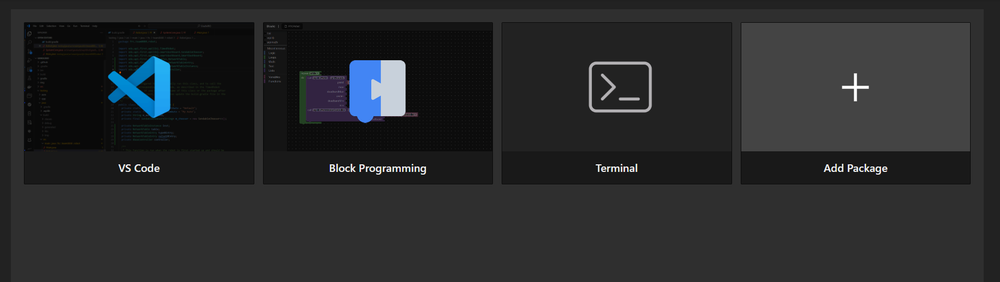
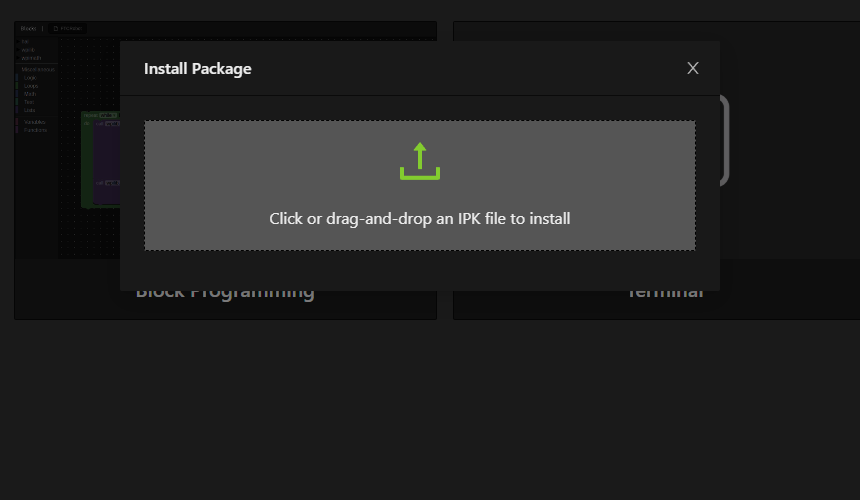
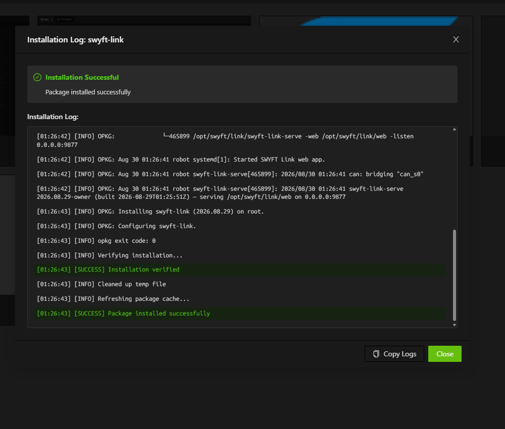
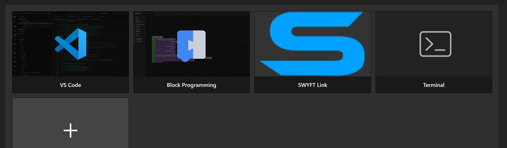

Install & connect
Configure and tune a Cyclone from a browser over USB-C, or on the SystemCore over CAN.
SWYFT Link is the tool for setting up Cyclones. In a browser it drives one motor over USB-C. On the 2027 SystemCore it reaches every Cyclone on the CAN bus. Using SWYFT Link
Connect over USB-C
- Plug a Cyclone into your laptop with USB-C.
- Open SWYFT Link in a supported browser. It detects the motor on its own — there is no connect step.
- Power the motor from a battery or supply on its power leads (6–24 V) for it to spin.
Install on the SystemCore
Download the package: SWYFT Link 2026.08.29.ipk
- Open the SystemCore home page in a browser and select Add package.

- Drop the
.ipkonto the box, or select it from a folder. It installs on its own.

- Open the SWYFT Link tile from the home page.

- Cyclones on the CAN bus appear in the device list.